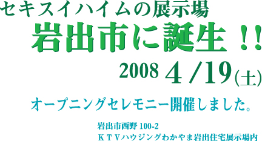
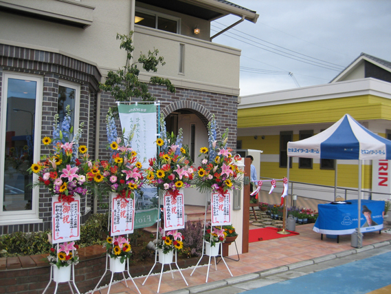
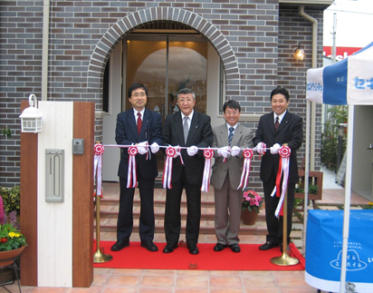
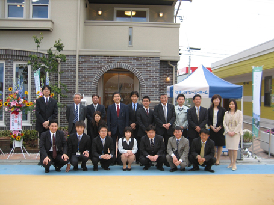

« 08年新春家づくり応援フェア | Main | リユースハイムキャンペーン一次抽選
会 »
2008年04月28日
岩出市に展示場誕生！
|

セキスイハイムが誇る「木の家／グランツーユー フィオラ」の展示場が、岩出市にオープンしました。
セキスイハイムといえば、「鉄骨」とお考えのみなさま、実は実は「木の家」も負けてはいません。
そして、セキスイハイムの特徴でもある、ユニット工法。そして、やはり「鉄骨」のハイムと同じく、そのほとんどが工場内でつくられます。
工場は岡山県にあります。（見学会も時々やります）
そんな話はさておき、このグランツーユー展示場は、和歌山では初のお目見え。
私たちも待望の「夢」のフィオラ展示場なのでした。（＾＾）

フィオラという名前は「花」から。
たくさんのお花で飾られて、展示場も誇らしげ・・。＾＾

社長、支店長、和歌山営業所長、そしてこのフィオラ展示場の店長の４人がテープカット！
・・・・の前に「はい！こっち見て笑って。。。」
「私たちがこのフィオラの生みの親です」って、いっぱい親がいますね。
たくさんのスタッフに見守られ、誕生したフィオラ展示場。
どうぞ、お気軽にお立ち寄りください。

グランツーユーフィオラ展示場へのお問合せは、
ＴＥＬ.0736-69-1816 まで
みなさまのお越し、お待ちしております。
|
TrackBack
TrackBack URL » http://w816.jp/cgi-bin/cms/mt-tb.cgi/48